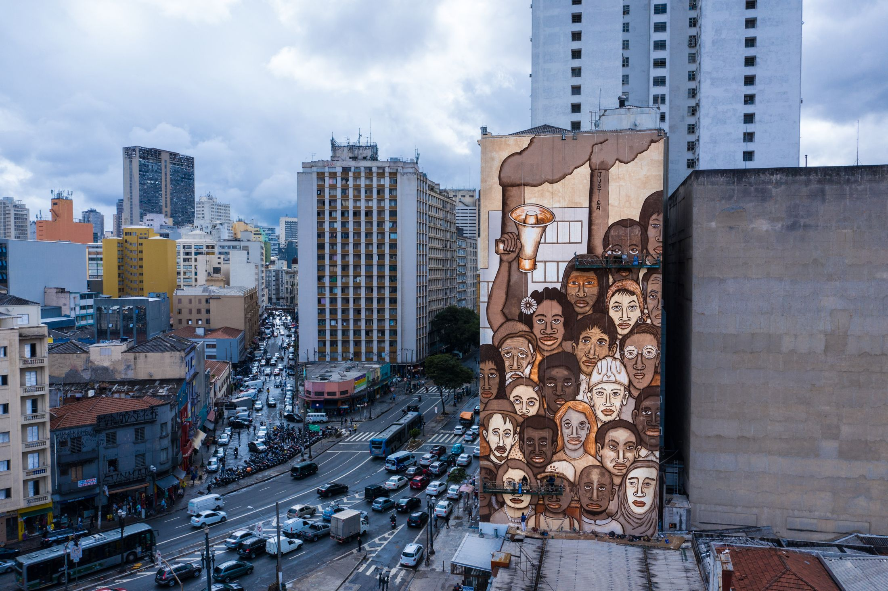
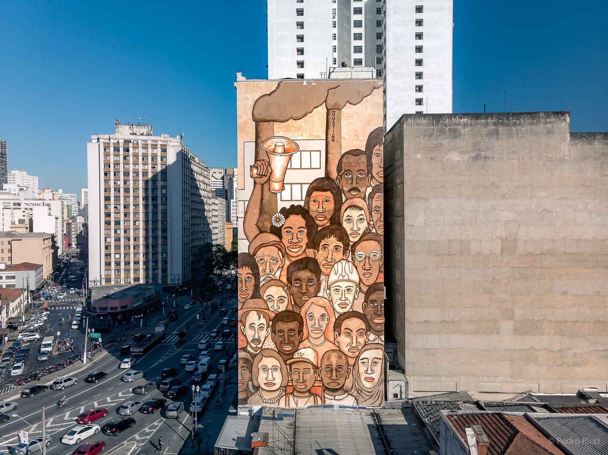
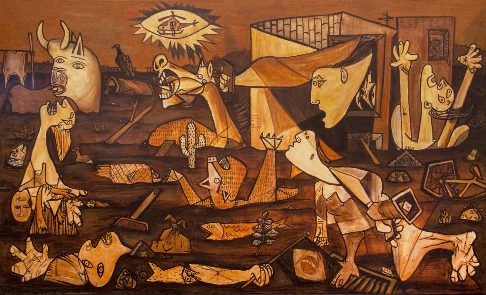
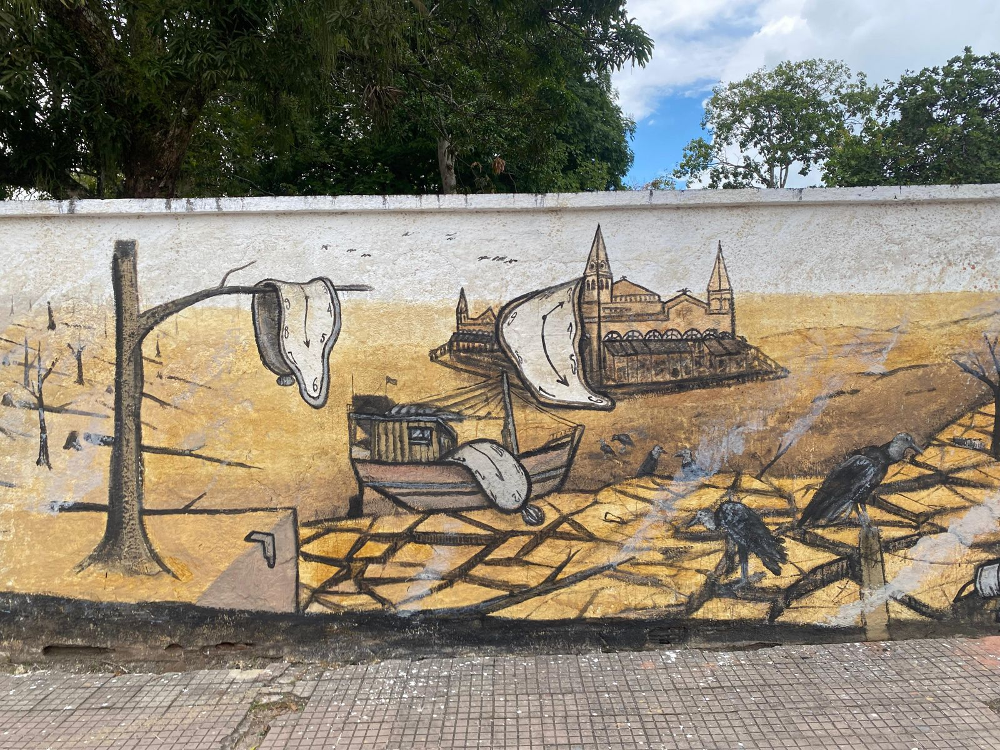
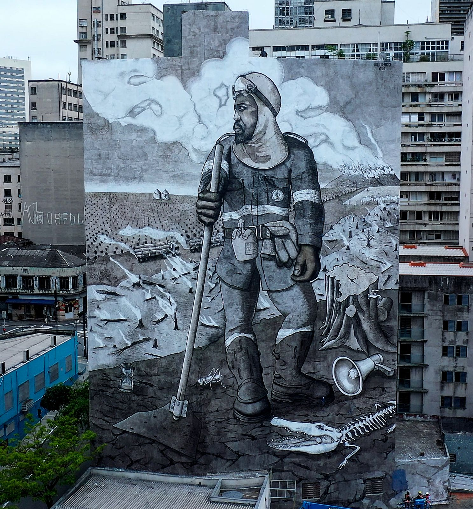
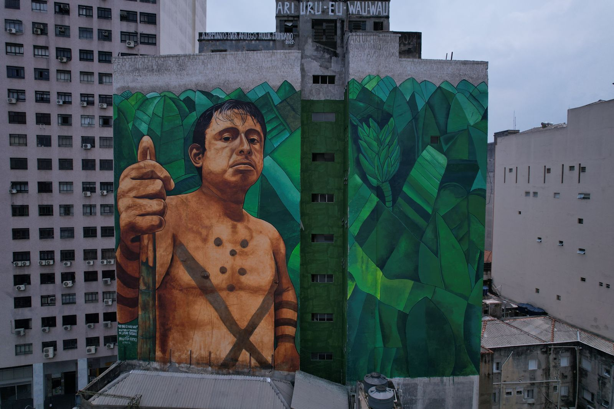
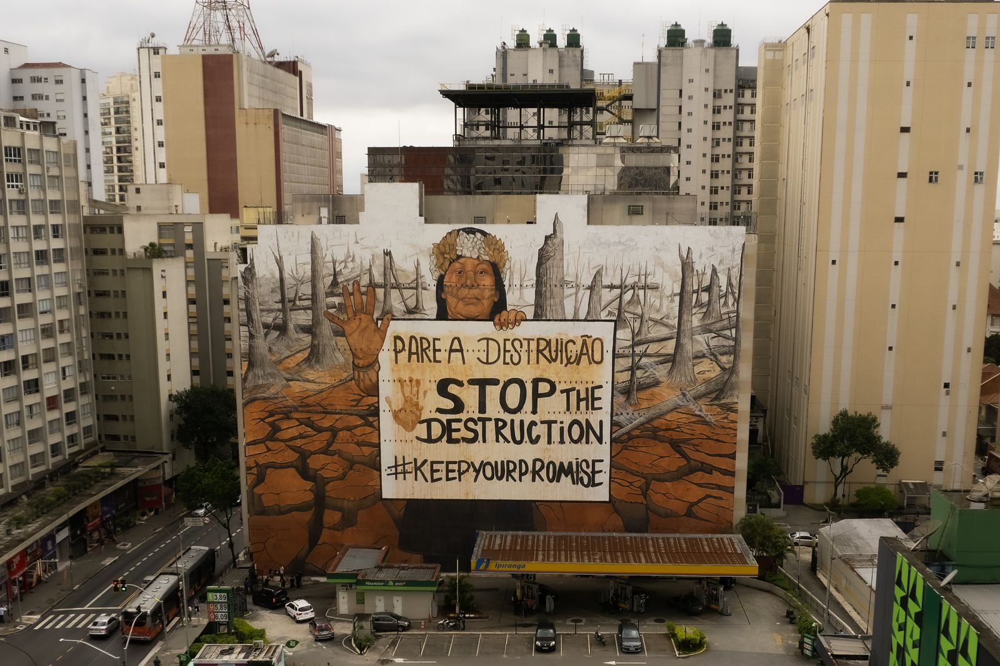
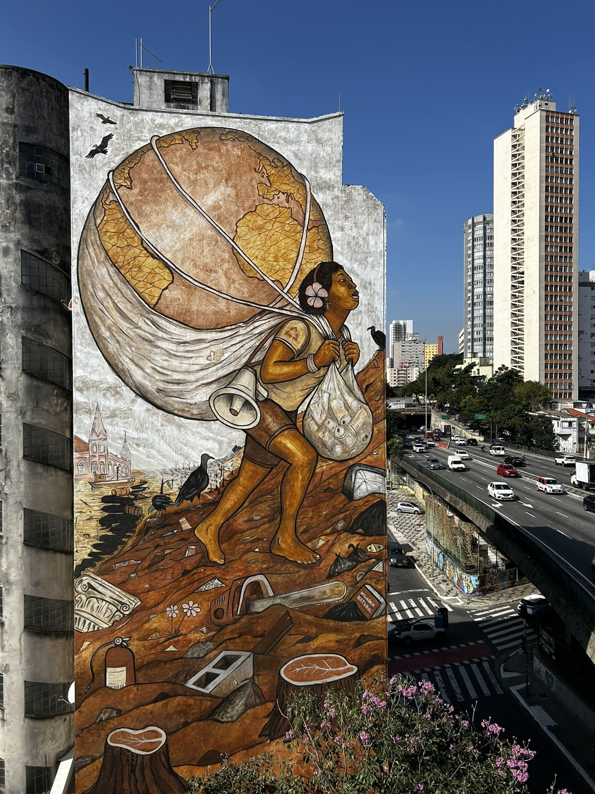

Prazer, Mundano.
Artivista, nascido em São Paulo em 1986. Há 20 anos usa a arte para dar visibilidade a causas socioambientais. Pinta muros, carroças, telas e laterais de prédios, e transforma resíduos de crimes ambientais em tinta.
Fundou o Pimp My Carroça, o aplicativo Cataki, o Prêmio Megafone de Ativismo e o Cinzas da Floresta. É TED Fellow e faz parte do comitê diretor do Global Artivism, conselho internacional de artistas e lideranças culturais que conduz o movimento global de artivismo.
Trajetória
As carroças
Catadores e catadoras de material reciclável fazem quase toda a reciclagem do Brasil. Mundano começou pintando as carroças desses trabalhadores, com frases como “Seu lixo é meu luxo”.
Em 2012 fundou o Pimp My Carroça, ONG voltada ao reconhecimento de catadores e catadoras e da importância do trabalho deles. Depois veio o Cataki, aplicativo sem fins lucrativos que conecta catadores a empresas, comércios e moradores que querem destinar seus resíduos para a reciclagem.
Esse trabalho levou Mundano a palestras, exposições e premiações em vários países, entre elas o Prêmio Folha Empreendedor Social do Ano, em 2020, e o Grand Prize do Netexplo Digital Innovation Award, em Paris, em 2018.


. Foto: Mel Duarte")


A tinta dos crimes ambientais
Nos últimos anos, Mundano percorreu o Brasil coletando resíduos dos maiores crimes ambientais da história do país: a lama tóxica do rompimento da barragem de Brumadinho, o óleo derramado nas praias do Nordeste e as cinzas das florestas queimadas. Com eles, faz a própria tinta.
Com essa tinta, Mundano passou a reler o modernismo brasileiro. Na série #releiturasmundanas, quadros de Tarsila do Amaral, Cândido Portinari e Lasar Segall voltam para a rua com os personagens e os materiais do Brasil de hoje.
A primeira foi Operários de Brumadinho, em 2020: a releitura de Operários, de Tarsila, pintada no centro de São Paulo com a lama da barragem que se rompeu em 2019. Da mesma série são Abaporuopeba, a partir do Abaporu, e Mestiço do Vale do Paraopeba, a partir de Mestiço, de Portinari.
Em 2022, no centenário da Semana de Arte Moderna, Mundano abriu a individual Semana de Arte Mundana, na Galeria Kogan Amaro, em São Paulo, com cerca de 50 obras feitas com lama, óleo e cinzas. O convite reinterpretava o cartaz de Di Cavalcanti para a Semana de 22. Na Sé, pintou Ari Uru-Eu-Wau-Wau, releitura de Bananal, de Lasar Segall, com terra do Marco Zero de São Paulo e cinzas da Amazônia, em homenagem ao guardião indígena assassinado em Rondônia em 2020.
Em 2023 abriu a exposição individual Resíduos Mundanos.



Cinzas da Floresta
Em 2021, Mundano percorreu 10 mil quilômetros coletando cinzas de queimadas na Amazônia, no Cerrado, no Pantanal e na Mata Atlântica. Com elas pintou O Brigadista da Floresta, mural de mais de 1.000 m² em homenagem aos brigadistas que apagam os incêndios, releitura de O lavrador de café, de Cândido Portinari. A expedição virou o documentário Cinzas da Floresta, de André D'Elia, lançado em 2022.
Em 2024 pintou Pare a Destruição, na Avenida Brigadeiro Luís Antônio, em São Paulo: mais de 1.500 m², a maior empena da carreira, com o retrato da liderança indígena Alessandra Korap feito com cinzas dos quatro biomas e lama das enchentes do Rio Grande do Sul. Em 2025, o Cinzas da Floresta levou à COP30, em Belém, uma exposição com mais de 300 obras de artistas do Brasil e de outros países pintadas com cinzas de incêndios.




A floresta em pó pela floresta em pé.
Obras e catálogo
Obras originais, prints numerados com certificado e a linha Cinzas da Floresta estão na loja. Para ver o catálogo completo de obras ou conversar sobre uma peça específica, fale direto com a equipe.
Ver a loja Catálogo e atendimento no WhatsApp